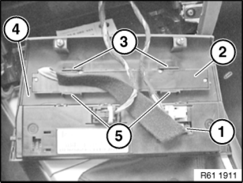
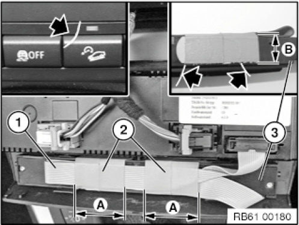
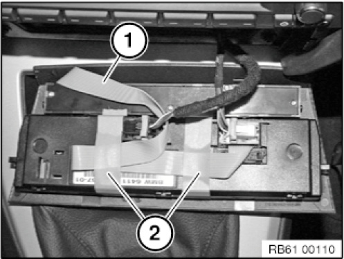

61 31 052 Removing and Installing/Replacing Centre Console Switch Cluster
61 31 052 Removing And Installing (Or Replacing Version Without CCC) Centre Console Control Panel (After 03/2007)

Necessary preliminary tasks:
- Remove middle cover for the dashboard

Disconnect plug connection of ribbon cable (1).
Unclip centre console control panel (2) from lower retaining tabs (3) and upper retaining tabs (5) and remove from middle dashboard cover (4).
Installation note:
Make sure centre console control panel (2) engages correctly in upper retaining tabs (5) and lower retaining tabs (3).
Make sure wiring harnesses are correctly routed.
Replacement:
Assign buttons according to vehicle equipment.

Replacement note
Excess length of ribbon cable.
To avoid damage and rattling noise, the ribbon cable must be fitted and secured correctly.

Installation note:
Replacement on vehicles with control panel for automatic climate control:
Install ribbon cable (1) as illustrated and secure over a wide area (A) with adhesive tape (2). Use the entire length of the side face (B) of the centre console switch cluster (3) for this purpose.
IMPORTANT:
The customer may notice threads of adhesive tape (see arrow).
Therefore, cleanly cut off adhesive strips.
Refer to Information on securing components with adhesive tape.

Installation note:
Replacement on vehicles with control panel for air conditioning system:
Install ribbon cable (1) as illustrated and secure with two adhesive strips (2).
Cleanly cut off adhesive strips (2).
Refer to Information on securing components with adhesive tape .